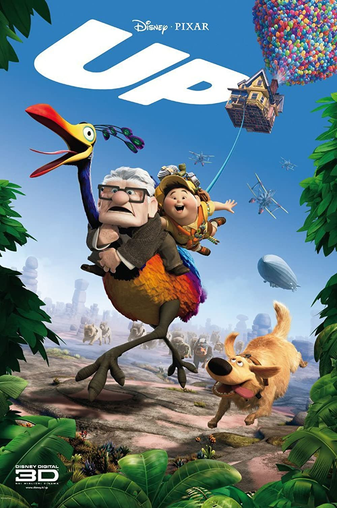

Up
The movie Up has always resonated with me. It is emotional and funny, with great characters and a whimsical storyline. The plot follows a young scout and curmudgeonly old man on an adventure to a distant country. Carl Fredrickson planned to take this trip early in life with his wife, Ellie. After her tragic death, Carl withdrew from society and stayed secluded. Eventually he decided to finally take the trip, by tying thousands of balloons to his house. Russell, the scout, was at Carl’s door to try to offer help to earn a badge. Russell is accidentally transported along with Carl and his house. When they arrive at their destination, they attempt to find an earlier adventurer, Charles Muntz, that Carl idolized who claimed to have found exotic skeletons, to the skepticism of everyone back in the US. Along the way they make a few allies, including a golden retriever named Dug with the ability to talk using a translation collar, and a large tropical bird they name Kevin. After finding Charles, they realize that he has a villainous side to him. His search for the exotic animal as proof has made him crazy. Carl and Russell realize that the animal he is searching for is actually Kevin, who they discovered is a female with young chicks. After some internal conflict, Carl sacrifices his house and memories with his late wife in order to save Kevin. Charles accidentally falls to his death, leaving his dirigible, which Carl and Russell use to go home, taking Dug with them. Kevin stays happily with her chicks, no longer threatened by Charles living in her area and searching for her. Back at home, Carl and Russell maintain a relationship, each completing the other’s family in a way they didn’t know they needed.
Personal Connection

This story resonates with me for a few reasons. The themes of loss and grief are obvious in the film. My father died in August of 2021, just a few months ago, and I can relate to this movie like never before. It isn’t clear exactly what illness Ellie suffered from at the end of her life, but the hospitalization rings familiar to me, as my dad had a very aggressive experience with Stage IV Lung cancer. From the time he was diagnosed until he died was only around 5 months, and the decline in quality of life was steep. Grief is hard and manifests in unusual ways, which Carl exemplifies. It defies logic to hang on to possessions so aggressively, like his house, all the things inside, and his decades past plan with Ellie to move to Paradise Falls, but grief is not logical. Forming new relationships to fill the holes left by past loved ones can be scary. Carl was hesitant to let anyone in to his life for a long time, until he met Russell. My dad was a small business owner, and since his death I have connected with the children of his longtime business partner. Their friendship has helped me feel more connected to my dad, as they knew him, and given me a circle of people who remember and can remind me of him.